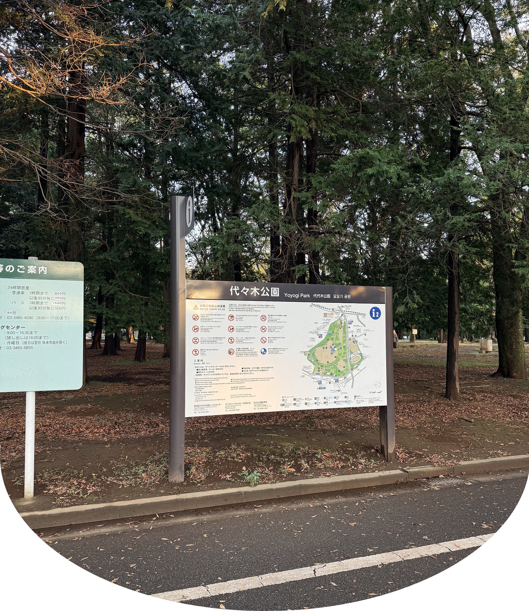
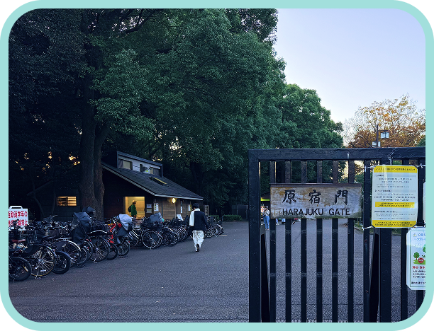
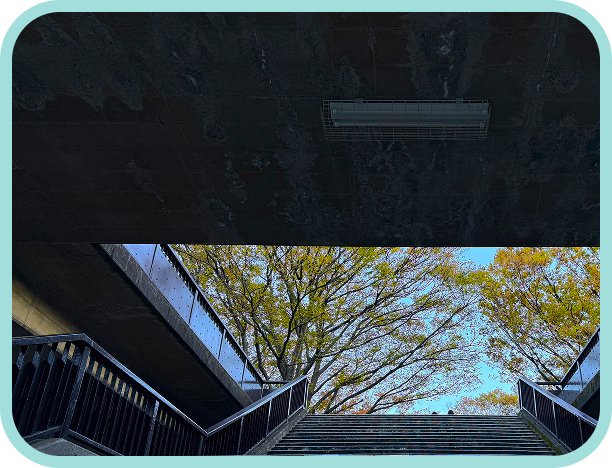
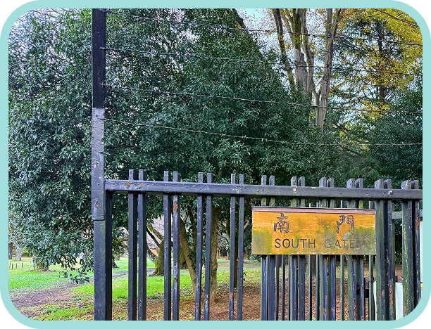
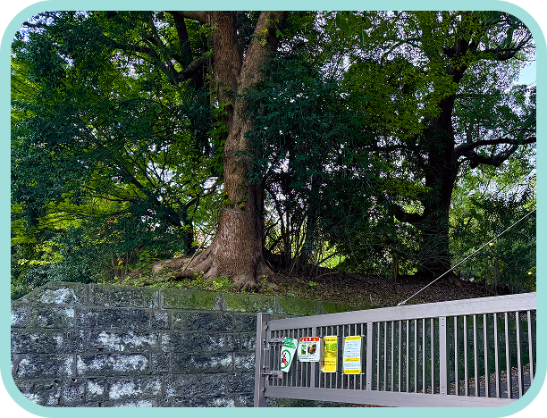

代々木公園を楽しむ前に、
基本情報をチェック。
利用案内
基本情報
所在地：東京都渋谷区代々木神園町、神南一丁目・二丁目
開園時間：常時開園
入園料：無料（一部有料施設あり）
休園日：なし
MAP
-
JR 原宿駅
徒歩約3分
-
東京メトロ 明治神宮前〈原宿〉駅
徒歩約3分
-
東京メトロ 代々木公園駅
徒歩約3分
-
小田急線 代々木八幡駅
徒歩約6分
ENTRANCE
公園の入り口
どこから入る？
最寄りの入り口をチェックしよう！
-

原宿門
原宿駅・明治神宮前駅
-

渋谷門
明治神宮前駅
-

南門
代々木公園駅
-

富ヶ谷門
代々木公園駅
-

西門
代々木公園駅・代々木八幡駅
-

参宮橋門
参宮橋駅